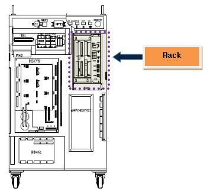

1.1.22.1. Outline
This error occurs if the Servo motor does not turn on when the main board sends out the motor on command to the Servo. The cause might be a communication problem between the main board and the Servo board.
The main board sends the Servo error clear command prior to sending the motor on command, and once the Servo error is cleared, the motor on command will be sent out. If the Servo error is not cleared, the same error persists, and the motor on command will go out. In other words, if the communication between the main board and the Servo board does not have a problem, the motor on command will be received or other Servo errors will occur.
1.1.22.2. Causes and checking methods
1. Examine if the main board and the Servo board are installed properly.
This error may be caused by a communication problem if the main board and the Servo board is not installed properly on a rack or the board has an error.
1) Examine if the board is installed properly.
Please remove the main board and the Servo board from the rack, and re-install them again.

Figure 5.63 Location of the rack inside the controller
2) Examine if the board is faulty.
To examine if the board is faulty, please replace it with a new one.